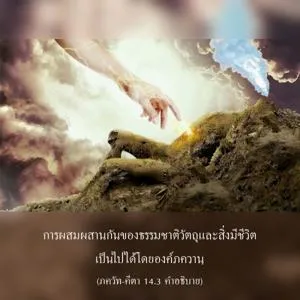
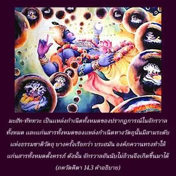
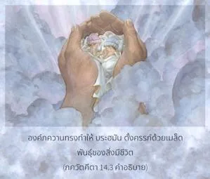
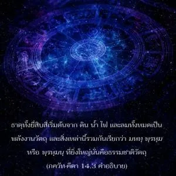

แก่นสารทางวัตถุทั้งหมดเรียกว่า พฺรหฺมนฺ ซึ่งเป็นต้นเหตุแห่งการเกิด และข้าทำให้ พฺรหฺมนฺ ตั้งครรภ์ การเกิดของมวลชีวิตจึงเป็นไปได้ โอ้ โอรสแห่ง ภรต




นี่เป็นการอธิบายเกี่ยวกับโลกนี้ คือ ทุกสิ่งทุกอย่างที่เกิดขึ้นเนื่องมาจากการผสมผสานของ กฺเษตฺร และ กฺเษตฺร-ชฺญ หรือร่างกาย และดวงวิญญาณ การผสมผสานกันของธรรมชาติวัตถุ และสิ่งมีชีวิตเป็นไปได้โดยองค์ภควานฺ มหตฺ-ตตฺตฺว เป็นแหล่งกำเนิดทั้งหมดของปรากฏการณ์ในจักรวาลทั้งหมด และแก่นสารทั้งหมดของแหล่งกำเนิดทางวัตถุนั้น มีสามระดับแห่งธรรมชาติวัตถุ บางครั้งเรียกว่า พฺรหฺมนฺ องค์ภควานฺทรงทำให้แก่นสารทั้งหมดตั้งครรภ์ ดังนั้น จักรวาลอันนับไม่ถ้วนจึงเกิดขึ้นมาได้ แก่นสารทางวัตถุทั้งหมดนี้ หรือ มหตฺ-ตตฺตฺว อธิบายว่าเป็น พฺรหฺมนฺ ในวรรณกรรมพระเวท (มุณฺฑก อุปนิษทฺ 1.1.19) กล่าวว่า ตสฺมาทฺ เอตทฺ พฺรหฺม นาม-รูปมฺ อนฺนํ จ ชายเต องค์ภควานฺทรงทำให้ พฺรหฺมนฺ ตั้งครรภ์ด้วยเมล็ดพันธุ์ของสิ่งมีชีวิต ธาตุทั้งยี่สิบสี่เริ่มต้นจาก ดิน น้ำ ไฟ และลมทั้งหมดเป็นพลังงานวัตถุ และสิ่งเหล่านี้รวมกัน เรียกว่า มหทฺ พฺรหฺม หรือ พฺรหฺมนฺ ที่ยิ่งใหญ่นั่นคือธรรมชาติวัตถุ ดังที่ได้อธิบายในบทที่เจ็ดยังมีธรรมชาติที่สูงไปกว่านี้ นั่นคือสิ่งมีชีวิต ภายในธรรมชาติวัตถุจะมีธรรมชาติที่สูงกว่า เข้าไปผสมด้วยความปรารถนาขององค์ภควานฺ และหลังจากนั้นมวลชีวิตได้กำเนิดมาจากธรรมชาติวัตถุนี้
แมลงป่องวางไข่ในกองข้าว บางครั้งกล่าวกันว่าแมลงป่องเกิดจากข้าว แต่ข้าวไม่ใช่แหล่งกำเนิดของแมลงป่อง อันที่จริงแม่ของแมลงป่องเป็นผู้วางไข่ ในทำนองเดียวกัน ธรรมชาติวัตถุไม่ใช่แหล่งกำเนิดแห่งการเกิดของสิ่งมีชีวิต บุคลิกภาพสูงสุดแห่งพระเจ้าทรงเป็นผู้ให้เมล็ดพันธุ์ และดูเหมือนว่าพวกเขาเกิดมาจากผลผลิตของธรรมชาติวัตถุ ดังนั้น ตามกรรมเก่าของตนเองทุกๆ ชีวิตจึงมีร่างกายแตกต่างกัน ซึ่งธรรมชาติวัตถุนี้เป็นผู้สร้าง สิ่งมีชีวิตสามารถได้รับความสุข หรือความทุกข์ตามกรรมในอดีตของตน องค์ภควานฺทรงเป็นแหล่งกำเนิดแห่งปรากฏการณ์ของสิ่งมีชีวิตทั้งหมดในโลกวัตถุนี้